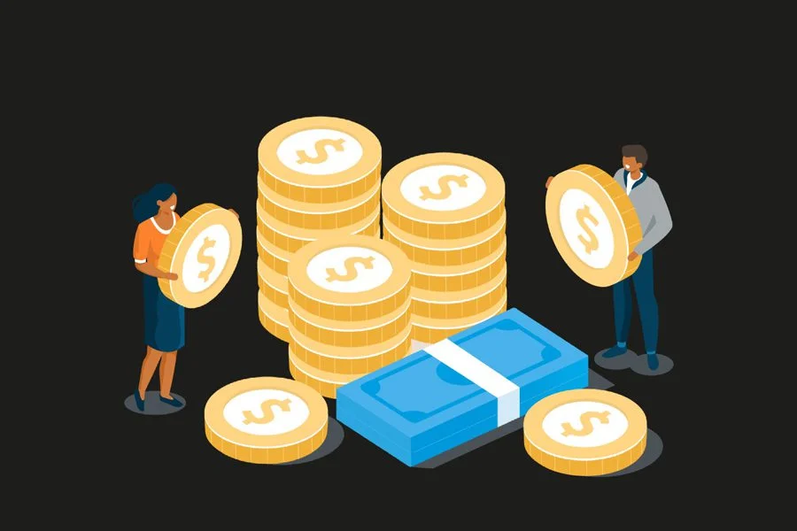

Che cos'è un tributo?
I tributi sono prelievi coattivi imposti dallo Stato o da altri enti pubblici per finanziare la spesa pubblica. Si distinguono in imposte, tasse e contributi.

Imposte dirette e indirette
Le imposte dirette colpiscono direttamente il reddito o il patrimonio (es. IRPEF), mentre quelle indirette gravano sul consumo (es. IVA). Entrambe incidono sull'economia e sul comportamento dei cittadini.

Effetti economici dei tributi
I tributi influenzano il comportamento economico: possono ridurre il consumo, disincentivare il risparmio o la produzione, ma anche favorire l’equità e la redistribuzione della ricchezza.
La progressività fiscale
Un sistema fiscale è progressivo quando l’aliquota aumenta all’aumentare del reddito. Questo strumento mira a ridurre le disuguaglianze sociali e promuovere la giustizia economica.

Conclusione
La conoscenza del sistema tributario è fondamentale per comprendere il funzionamento dello Stato e l’impatto delle politiche fiscali sull’economia e sulla società.